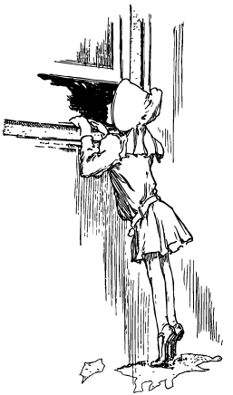

Mew Forest: Не нужно стремиться в рай, не найдя его здесь

Жанр: Другое, размышления
О произведении: Автор рассуждает о проблеме соляпсизма и реальности всего окружающего через призму обыденной студенческой жизни. Произведение написано в 2015 году.
Довольно часто я задавался вопросом о всей этой немного странной сущности вещей в жизни. Словно из той краткой притчи: Кто кому снится, мудрец бабочке или бабочка мудрецу. Помните, эту давнюю дилемму? Так вот из неё можно сделать интересный вывод, который мы с вами и попробуем обсудить. Не поймите меня неправильно, но почему же мне нельзя считать, что всё окружающее меня - лишь искусственный тест самого меня, когда вокруг из людей, таких же как я – никого. Вы можете сейчас даже сами попробовать оглянуться: посмотрите на эти лица, вы видите на них эмоции рядом сидящих людей, не правда ли? Или же вы видите отражение своих эмоций на чужих лицах? Тогда пропуская абзац про то, что человек в принципе не видит далее своего сознания, давайте предположим, что вокруг нету людей. А вокруг всего лишь иллюзорные модули, проработанные кем-то со стороны в нашем, я с позволения возьму в кавычки, реальном мире. Наверное, странно, но потом нам страшно будет эти кавычки опускать, ведь тогда реальный, настоящий мир, мы, скорей всего даже не можем представить.
Отвлечёмся на секундочку. Наверное, было бы забавно проснуться однажды после смерти с коннектером в шее, когда тебя вокруг будут окружать новые старые друзья, быть может там будут и любимые, близкие, дорогие тебе люди, память о которых, казалось, была навеки стёрта в мире, в котором ты жил. Что ж, в таком случае тебя будет ждать настоящее временное открытие, если конечно память вернётся. Однако, уверен, тебе будет жаль тех, что находятся, а точнее находились в бывшем ранее реальным, мире, так что даже после возврата памяти и воспоминаний, ты всё ещё будешь изредка садиться у своего камина, держать в руке тёплый чай и укрывшись пледом вспоминать кого-нибудь из очень близких людей, при условии, что чай не выдумало твоё сознание, пока ты был в нереальном мире. Удивительно, но ты всё ещё будешь скучать по образу, зная, что ничего реального за ним не скрывалось. Да, в этом вся человеческая сущность: только люди одушевляют окружающее пространство. Впрочем, давай обусловимся в том, что ты наверняка знать можешь только лишь про себя. И вот так, каждый день, час, минуту и секунду ты вселяешь в различные образы жизнь, когда в этих образах её нет, да, как и у твоей любимой домашней кошки, которую отец озвучивает, вдыхая в неё часть своей измученной человеческой души, прячущейся за улыбками и шутками длинных седых усов.
Отвлечёмся на секундочку. Наверное, было бы забавно проснуться однажды после смерти с коннектером в шее, когда тебя вокруг будут окружать новые старые друзья, быть может там будут и любимые, близкие, дорогие тебе люди, память о которых, казалось, была навеки стёрта в мире, в котором ты жил. Что ж, в таком случае тебя будет ждать настоящее временное открытие, если конечно память вернётся. Однако, уверен, тебе будет жаль тех, что находятся, а точнее находились в бывшем ранее реальным, мире, так что даже после возврата памяти и воспоминаний, ты всё ещё будешь изредка садиться у своего камина, держать в руке тёплый чай и укрывшись пледом вспоминать кого-нибудь из очень близких людей, при условии, что чай не выдумало твоё сознание, пока ты был в нереальном мире. Удивительно, но ты всё ещё будешь скучать по образу, зная, что ничего реального за ним не скрывалось. Да, в этом вся человеческая сущность: только люди одушевляют окружающее пространство. Впрочем, давай обусловимся в том, что ты наверняка знать можешь только лишь про себя. И вот так, каждый день, час, минуту и секунду ты вселяешь в различные образы жизнь, когда в этих образах её нет, да, как и у твоей любимой домашней кошки, которую отец озвучивает, вдыхая в неё часть своей измученной человеческой души, прячущейся за улыбками и шутками длинных седых усов.
Что ж, проснувшись от сна ты скажешь своим новым старым друзьям: «Раз всё так происходит, то душа и среди машин, модулей, микропроцессоров, плат и сложных вычислительных программ существует». А друзья не удивятся, улыбаясь, они крикнут санитара, чтобы он замотал обратно тот длинный кабель что жил с тобой все эти дни. Возможно кто-то, очень близкий погладит тебя по твоим непослушным волосам и скажет, что всё хорошо. Тогда и ответишь ты, попросив настоящих друзей, смотрящих на тебя в твоей небольшой капсульной кровати в углу, об одолжении иногда возвращать тебя обратно в твой старый невзрачный мир.
Смотрите, а ведь всё то, что я тут читаю может оказаться правдой, а не очередной фантазией, хоть и чудес не бывает, подобный расклад реальности вряд ли можно будет назвать чудом. А раз это несчастье, то по-Мерфи оно может случиться наверняка. Немного отойдя от темы, замечу, что в жизни вероятность есть всего и, если так вдруг суждено случиться, попробуйте тогда и задать себе всего лишь один каверзный вопрос: «А раз так, то реален ли новый мир?».
Вернёмся обратно, туда, где уже не слышен ни звон колокола, ни шелест листвы. Помнишь, родители были у тебя самым дорогим, что оставалось у тебя в детстве, там, где только твоя душа и раскрывала свои маленькие прозрачные крылышки, поднимая неокрепшее тело в немного нагретый солнцем воздух домашней теплицы. Тот тёплый ветер воспоминаний никогда не забываем. А почему бы и да, вдруг твои родители - единственные, кто кроме тебя и существовали в той ненастоящей реальности? Или, быть может, всё и все, которых ты никогда не хочешь потерять (хватит пальцев одной руки, не так ли?) будут лежать в соседних палатах с таким же прозрачным кабелем в шее. Или быть может они - на самом деле являются частью твоего сознания? Но тогда, когда ты любил их, ты любил себя. Или вот ещё вариант, который стоит подбросить в качестве угля в наш небольшой камин: в результате определённого набора размышлений, ты в конце концов смиришься с собой и осознаешь всю ситуацию от А до Я. Не путаясь в иллюзиях, ты напишешь в своём новом дневнике: «Эй, мне определённо нравился тот иллюзорный старый мир, я люблю его, впрочем, и этот новый мне не чужд, так что я обязательно буду иногда возвращаться обратно!». Но нет, дверь заперли изнутри. Твоё сознание схлопнулось и даже то, что помогало тебе раньше – разум, самообладание, решительность теперь уже не будут иметь никакого смысла. Вернуться назад нельзя.
Если всё вокруг существовало, то есть то, что ты видишь сейчас является лишь плодом твоего сознания, то это позволяет нам сделать интересные выводы. Ведь тогда ты и вправду особенный, единственный, прекрасный, но очень одинокий человек, запертый в одиночной камере своей жизни на несколько десятков лет. Что ж, зато это помогает тебе не считать себя эгоистом, какой смысл уважать людей, если есть только ты. Но прежде становления этой прекрасной лжи за правило, я попрошу тебя об одолжении. Скажи, почему я тебе об этом говорю?
Отчего же? Ведь тогда ты ничего никогда не умел, нет, ты был не лучше всех, потому что все – это и есть ты.
Жаль, потому, что это обрушивает наш с тобой коварный план побега. Сейчас высказывая слова, завязанные в морской узел, я хотел бы сказать каждому из вас здесь сидящих, и тебе, чьё сознание эту беседу проецирует: возможно, никто здесь не является программным модулем без души, но также возможно, даже с ещё большей вероятностью, что каждый из нас этим модулем постепенно становится. Теряя уникальность человек превращается в механизм. Рано или поздно каждый задаст себе вопрос: «Фантом, модуль ли я?». Задам этот вопрос себе и я. Что ж, даже если так, то мне будет очень сложно в этом признаться… Я оставлю этот вопрос незаконченным. Вряд ли я, как хорошо запрограммированный модуль имел бы доступ к сведениям или к возможностям презентовать тебе свою сущность.
Так что тогда, выйдя из капсулы ты захочешь, но не сможешь убежать от новой реальности.
Что ж, возможно люди вокруг не более чем обычные достижения твоего Я и личности, что скрыта под слоем человеческого иррационального сознания, словно страницы, люди окружающие тебя похожи на историю в браузере в твоём стареньком ноутбуке. Впрочем, что до меня, я никогда её не удаляю. Пусть даже воспользовавшись единожды, я похвалю в будущем себя за то, что так и не потерял её бесследно. Что же про людей – стереть их невозможно, от них от них всё равно остаются воспоминания.
Я, наверное, не ответил тебе почему наш план побега из нового мира окажется провальным. Пускай, никто не против, если ты и есть главный персонаж этой одержимой и непонятной игры, под названием жизнь, но тогда почему же ты не в центре этой карты? Каким образом, тебя вынесло куда-то на бессмысленную обочину: вокруг города миллионники, страны, континенты, разные люди, кому-то из них «везёт», кому-то не очень, и они все почему-то знают куда им идти, когда ты всего лишь на мгновение задумался и прислонил голову к запотевшему стеклу электрички и просто молчишь. Тебе часто не хватает малого, но день за днём, ничего не меняется… Понимаешь, обвинить кого-то ещё во всём этом было бы бессмысленно, ведь в таком случае придётся вновь доказывать ситуацию выше: а она опровергается этим же определением. Если ты один в этом мире, то во всём существующем виноват только ты. Как бы ты не гнул параллельные линии, их оказывается никогда и не было.
Уйдём от длиннострочных рассуждений. Представьте, я вот сейчас говорю это, а дверь резко распахивается и через неё влетает целый спецназ, словно котят кладут мускулистые парни в форме всех на пол, и словно большая разъярённая псина рвёт вот эти вот листы. Рассказываю я тут, видите ли, тайну, которая на самом деле помогает изменить не тот будущий, а вот этот, наш сегодняшний настоящий мир, впрочем, с пулей в ноге я вряд ли буду об этом говорить.
А вопрос на самом деле вот в чём: мы постоянно хотим обвинить во всём происходящем других. Нет никого, кто винил бы тебя и меня в этом, однако, не думаю, что Бог в таком контексте являлся бы одним из твоих друзей у коннектора, ведь этот мир скорее похож на эксперименты уставшего от жизни врача, будто бы поневоле, тебя, попавшего в катастрофу на неизвестной дороге в неизвестном месте, о котором ты забыл с момента рождения, тебя, покалеченного об асфальт кого-то, положили в эту непонятную капсулу и загрузили в твою голову вот этот мир.
А сейчас ты в искусственной коме (или где ты? где ты вообще сейчас?). Вдруг, остальные, по ту сторону изгороди сейчас думают, «А работает ли наша новая технология создания новой реальности?», «А вернётся ли он обратно в Жизнь?» или «А помнит ли, думает ли он нас?..».
…
Задумывался ли ты, что свою жизнь ты записываешь на камеру своих глаз в мозговую кассету? Может быть твои «друзья там» всё видят, и пока ты слушаешь меня читаешь это, открывают свежую упаковку еды с твоим логотипом, ведь на такой проект были уплачены миллионы забытой тобой валюты. Да, а ведь тогда и вправду не стоит переживать, насильно тебя из этого мира никто не вытащит, наоборот. Наоборот…
Думаешь ли ты сейчас, что лучше быть решительным, а твои уже не-друзья только и проверяют, как быстро ты к ним вернёшься, увы, твой взгляд на рельсы перед утренним поездом и уж тем более неудачная попытка под него залезть, на самом деле окажется полным фоллом. Возможно им без проблем будет перезаписать тебя, ведь ты им не нужен.
И вот ты уже думаешь, что в том новом мире твоей жизнью управляют никакие не друзья, а быть может они просто и не знают, что творится.
Ты только не переживай, как очнёшься, побежишь сразу в полицию… или как у них это называется?
Впрочем, не думаю, что происходящее вокруг - твоего сознания дело, ты не гений, хотя я не знаю, что может произойти с человеком если по нему проедется поезд, а потом остатки подключат к интернет кабелю. Пускай это и домыслы, ты бы всё отдал за идеальный мир там даже потеряв драгоценный этот. Такова человеческая сущность.
Не нужно стремиться в Рай, не найдя его здесь.